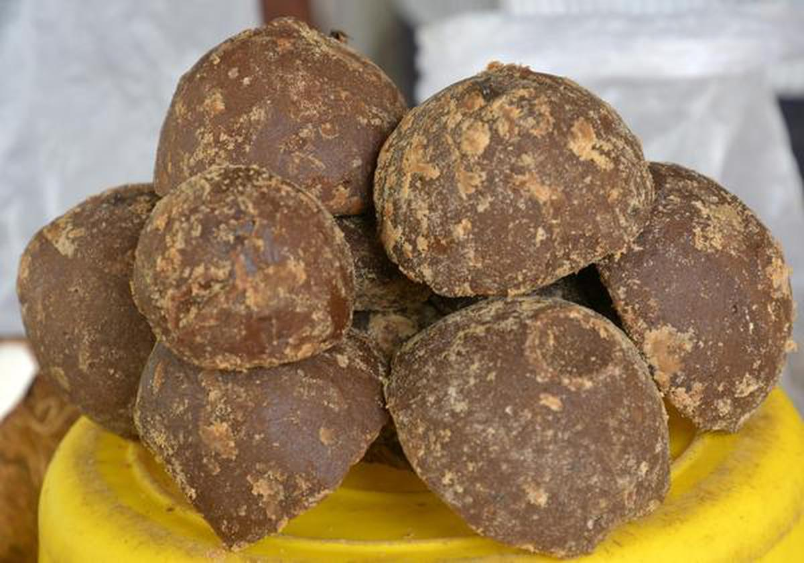

மணிகண்டன் ராஜேந்திரன்
M.A. [ஆசிரியர் பயிற்சி]
வெல்லம் வியாபாரி, எக்கூர்
|
மணிகண்டன் ராஜேந்திரன்M.A. [ஆசிரியர் பயிற்சி] வெல்லம் வியாபாரி, எக்கூர் |
 |
மாநிலம் முழுவதும் பிரதான பருவத்தில் (டிசம்பர் - மே) கரும்பு முக்கியமாக பயிரிடப்படுகிறது. திருச்சிராப்பள்ளி, பெரம்பலூர், கரூர், சேலம், நாமக்கல் மற்றும் கோயம்புத்தூர் ஆகிய மாவட்டங்களின் சில பகுதிகளிலும், சிறப்பு பருவத்தில் (ஜூன் - செப்டம்பர்) வளர்க்கப்படுகிறது.
இதில் 50% வரை சுக்ரோஸ், 20% வரை தலைகீழ் சர்க்கரைகள் மற்றும் 20% ஈரப்பதம் உள்ளது, மீதமுள்ளவை மர சாம்பல், புரதங்கள் மற்றும் பேகாஸ் இழைகள் போன்ற கரையாத பொருட்களால் ஆனது.
வெல்லம் தயாரிப்பது என்பது சாறு பிரித்தெடுப்பதற்காக கரும்புகளை நசுக்குவது, செறிவூட்டலுக்காக சாற்றை வடிகட்டுதல் மற்றும் கொதிக்க வைப்பது மற்றும் வெல்லம் தொகுதிகளை கொடுக்க குளிர்ச்சி மற்றும் திடப்படுத்துதல் ஆகியவற்றை உள்ளடக்கிய ஒரு எளிய செயல்முறையாகும். சாறு வழக்கமான நொறுக்கியில் பிரித்தெடுக்கப்படுகிறது; இது பின்னர் வடிகட்டி மற்றும் ஆழமற்ற இரும்பு பாத்திரங்களில் வேகவைக்கப்படுகிறது. கொதிக்கும் போது, சாற்றை சுத்தம் செய்ய இரசாயன ப்ளீச்சிங் ஏஜெண்டுகள் சேர்க்கப்படுகின்றன, மேலும் வெளியில் உள்ள பொருட்கள் தொடர்ந்து அகற்றப்பட்டு பிரகாசமான தங்க நிறத்தைக் கொடுக்கும்.
பின்னர் வேகவைத்த சாறு இரும்பு/அலுமினியப் பாத்திரங்களில் குளிர்விக்க விடப்பட்டு வெல்லம் தொகுதிகள் உருவாகும். இந்த அச்சுகளின் அளவு குறிப்பிட்டது மற்றும் 1 கிலோவிலிருந்து மாறுபடும் வெல்லத்தின் தொகுதியின் எடையைப் பொறுத்தது. தொகுதிகள் சணல் துணியில் அடைக்கப்பட்டு அனுப்பப்படுகின்றன. வெல்லத்தின் மகசூல் விகிதம் சுமார் 10%, 100 கிலோ கரும்பு 10 கிலோ வெல்லம்
ஒரு கால் கப் வெல்லத்தில் உள்ளவை:
கலோரிகள்: 100
புரதம்: 1 கிராம்க்கும் குறைவானது
கொழுப்பு: 1 கிராம்க்கும் குறைவானது
கார்போஹைட்ரேட்: 26 கிராம்
ஃபைபர்: 1 கிராம்க்கும் குறைவானது
சர்க்கரை: 24 கிராம்
வெல்லத்தில் மேலும் பின்வருவனவும் உள்ளன:
கால்சியம்
மெக்னீசியம்
பொட்டாசியம்
பாஸ்பரஸ்
வெல்லம் ஒரு தாவர தயாரிப்புக்கான இரும்புச்சத்துக்கான சிறந்த மூலமாகும். ஒரு நாளுக்கு தேவையான இரும்பு உட்கொள்ளலில் கிட்டத்தட்ட பத்து சதவிகிதம் ஒரு சேவையில் இருக்கலாம். ஆரோக்கியமான இரத்த அணுக்களை ஆதரிக்க இரும்பு முக்கியமானது. உங்கள் உணவில் போதுமான இரும்புச்சத்து இருப்பதால், சோர்வு குறையவும், தசை செயல்பாட்டை மேம்படுத்தவும் உதவும்.
திரு.மணிகண்டன் ராஜேந்திரன்
சாமாச்சிக்கொட்டாய், எக்கூர்
தொலைபேசி எண்: +91 9751006007 [அழைக்க]